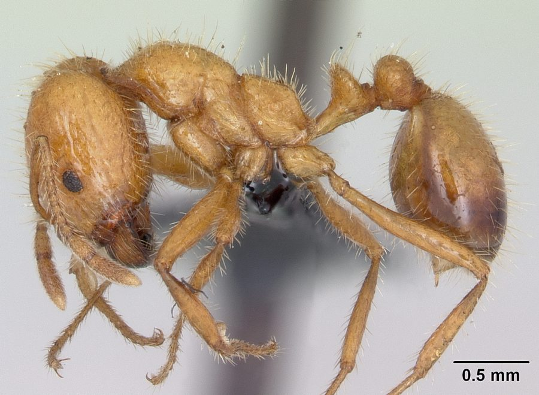

लाल चींटीTropical Fire Ant
Solenopsis geminata · Formicidae · INS-0039

- Scientific name
- Solenopsis geminata (Fabricius, 1804)
- Family
- Formicidae
- Hindi
- लाल चींटी
- Status here
- naturalized
- IUCN
- not evaluated
When to look कब देखें
Present all year.
लाल चींटी / Tropical Fire Ant
Solenopsis geminata (Fabricius, 1804) — Formicidae
लाल चींटी (ट्रॉपिकल फायर एंट) — पूर्वी उत्तर प्रदेश के बगीचों, खेतों की मेड़ों और घरों के आंगनों में पाई जाने वाली एक अत्यंत आक्रामक और सामान्य निवासी चींटी है। यह मूल रूप से अमेरिका की मूल निवासी है लेकिन अब भारत के उष्णकटिबंधीय क्षेत्रों में पूरी तरह से प्राकृतिक (naturalized) हो चुकी है। इसका शरीर लाल-भूरे रंग का होता है और इसके श्रमिकों (workers) का आकार काफी अलग-अलग (polymorphic) होता है। इसके घोंसले (mound) में थोड़ी सी भी हलचल होने पर सैकड़ों चींटियां सेकंडों में बाहर निकलकर आक्रामक रूप से हमला करती हैं। इसके डंक में फॉर्मिक एसिड के साथ पिपेरिडीन (piperidine) एल्कलॉइड होता है, जिससे त्वचा पर तीव्र जलन और दर्द होता है, जैसे आग से जल गया हो। यह किसानों के लिए दोहरे स्वभाव की है; यह हानिकारक कीटों का शिकार करती है, लेकिन डंक मारने की प्रवृत्ति के कारण कृषि कार्यों में बाधा डालती है।
Quick Identification त्वरित पहचान
| Feature | Description |
|---|---|
| Size | Polymorphic workers; body length 2.4–6.0 mm; queens up to 8 mm |
| Colouration | Shiny reddish-orange or yellowish-red; abdomen (gaster) is darker brown |
| Polymorphism | Soldiers (major workers) have massive, square heads; minor workers are small |
| Petiole | Two distinct nodes connecting the thorax and the gaster |
| Nest | Loose, irregular earthen mounds in sunny locations or under stones |
| Aggression | Extremely high; swarms out and attacks instantly if the nest is disturbed |
Field tip: Observe loose soil mounds in sunny lawns or crop beds. Walk near them; if the soil is lightly disturbed and hundreds of reddish-orange ants swarm out instantly, raising their gasters to sting, it is the Tropical Fire Ant. Do not stand near the mound.
Morphology आकारिकी
Biometrics (typical measurements for worker specimens in local gardens):
| Measurement | Range |
|---|---|
| Body length | 2.4–6.0 mm (polymorphic workers) |
| Wing length | wingless (workers); 6.0–8.0 mm (winged reproductive castes) |
Body details: Workers are highly polymorphic, showing a wide range of sizes. Major workers (soldiers) have a massive, square, deeply notched head with large, curved mandibles, used to crush seeds and bite enemies. Minor workers are much smaller, with proportioned heads. The body color is shiny, ranging from yellowish-red to dark reddish-brown, with the gaster being dark brown. The antennae are 10-segmented with a 2-segmented club. The petiole has two prominent nodes. Fertile queens are much larger, wingless after mating, with a robust thorax.
Behaviour & Ecology व्यवहार और पारिस्थितिकी
Aggressive defender and seed collector.
- Swarming defense: When the nest mound is disturbed, workers emerge in massive numbers within seconds. They climb onto the intruder, grip the skin with their mandibles, and sting repeatedly using a retractable stinger on the gaster tip.
- Division of labor: Minor workers specialize in foraging, nest cleaning, and nursing larvae. Major workers (soldiers) remain inside the nest to process hard seeds and defend the colony entrances.
- Seed harvesting: Forages for small plant seeds, carrying them to underground chambers. If the seeds get wet, workers carry them to the surface to dry in the sun to prevent germination.
Ecological Role पारिस्थितिक भूमिका
Predator and bioturbator.
- Biological control: Preys on various ground-dwelling agricultural pests, including caterpillar pupae, beetle larvae, and termites.
- Soil aeration: Their extensive nesting tunnels loosen the soil, improving aeration and organic mixing (bioturbation).
- Invasive competitor: Competes aggressively with native ants, often displacing them from gardens and crop fields.
Life Cycle / Phenology जीवन चक्र
- Nuptial flight: During the warm, humid days of the monsoon (July–August), winged queens and males leave the nest for a mating flight.
- Colony founding: Mating occurs in flight. Males die, and fertilized queens land, break off their wings, and dig a small chamber in the soil to lay eggs.
- Development: Eggs hatch into white, legless larvae. The queen feeds them using her own body reserves. The larvae pupate and emerge as the first batch of small minor workers (minims), who assume all foraging and nest care duties.
Host Plants or Prey आहार
Diet: Omnivorous.
- Animal prey: Small insects, termites, soft beetle grubs, caterpillars, and animal carcasses.
- Plant material: Seeds of wild grasses, agricultural crops, and sweet nectar. They also attend aphids to collect sweet honeydew.
Predators / Natural Enemies शत्रु
- Amphibians: Common toads (such as [AMP-0001 Common Toad] - check ID) feed on ants at mound margins.
- Birds: Insectivorous birds, particularly domestic poultry, consume them when nests are turned over.
- Insects: Ant-lion larvae (doodlebugs) trap individual foraging workers in sandy pits.
Agricultural / Human Relevance कृषि प्रासंगिकता
Mixed agricultural impact.
- Pest suppression: Consumes soil grubs and caterpillars, helping farmers suppress pests in sugarcane and cotton fields.
- Farm nuisance: Their painful stings present a major hazard to agricultural laborers during manual weeding and potato harvesting. Nests in home gardens can make lawns unusable.
- Sting treatment: The venom contains piperidine alkaloids. Clean the site, apply an antiseptic, and use a paste of baking soda or cold compresses to relieve the burning.
Expected Locally स्थानीय रूप से अपेक्षित
Not a field record. Written from published accounts for eastern Uttar Pradesh. No confirmed local sighting yet — if you have seen it, that is what the atlas needs.
अभी तक स्थानीय पुष्टि नहीं। यह विवरण प्रकाशित स्रोतों से है, किसी अवलोकन से नहीं।
Very common across Basti district, especially in blocks with sandy-clay soils near the Ghaghra River basin like Vikramjot. Their loose soil nests are commonly found along field pathways (dand) and in home flower beds.
Distribution वितरण
Global range: Native to the tropical regions of the Americas; now introduced and naturalized across the tropical zones of Africa, Southern Asia, and the Pacific.
In India: Widespread in all agricultural and suburban plains.
In Uttar Pradesh: Abundant resident across all districts.
In Basti district / eastern UP: Observed commonly in all rural and town ecosystems.
Research Questions शोध प्रश्न
Anyone can investigate these | कोई भी इन प्रश्नों की जाँच कर सकता है
- How does the presence of Tropical Fire Ants affect the nesting success of ground-nesting solitary bees in Basti orchards? / उष्णकटिबंधीय लाल चींटियों की उपस्थिति बस्ती के बागों में जमीन पर घोंसला बनाने वाली मधुमक्खियों की सफलता को कैसे प्रभावित करती है? — Monitor bee nests near and far from fire ant mounds.
- Does the Gundy Bug's defensive smell repel fire ant attacks in paddy margins? / क्या गंधी कीड़े की रक्षात्मक गंध धान के किनारों पर लाल चींटियों के हमलों को रोकती है? — Conduct controlled encounters on rice stems.
- What is the ratio of major soldiers to minor workers in fire ant mounds in Basti vegetable gardens? — Extract small soil samples and count worker castes.
- Do fire ants prefer seeds of oilseed crops over cereals for storage in their granaries? — Offer choice tests of mustard vs. wheat seeds near a nest entrance.
- Can children observe a path near a fire ant nest and record what food items they carry (seeds, dead insects, sugar) over 10 minutes? — A simple foraging study.
Similar Species मिलती-जुलती प्रजातियाँ
| Species | Key Difference | हिंदी |
|---|---|---|
| Oecophylla smaragdina (Weaver Ant) | Much larger (8–10 mm); long legs; nests in tree leaves, not in soil; stings by biting and spraying formic acid | बयनी चींटी / माटा — पेड़ों पर रहना, बड़ा आकार |
| Monomorium pharaonis (Pharaoh Ant) | Much smaller (1.5–2 mm); uniform light yellow; nests indoors; workers are monomorphic | पीली छोटी चींटी — बहुत छोटी, घरों में |
| Solenopsis invicta (Red Imported Fire Ant) | Global invasive pest; not currently recorded or confirmed in Basti district | विदेशी लाल चींटी — वैश्विक आक्रामक कीट |
Field rule: Reddish-orange body, dark abdomen, workers with highly variable head sizes (polymorphic), and an aggressive swarming response from soil mounds with a burning sting, identify the Tropical Fire Ant.
Taxonomy & Classification वर्गीकरण
Original description. Johan Christian Fabricius described the Tropical Fire Ant as Atta geminata in 1804 in Systema Piezatorum (p. 423). The type locality was South America. The genus name Solenopsis is derived from the Greek solen (channel/pipe) and opsis (appearance), referring to the structural features of the head. The specific name geminata is Latin for "doubled" or "paired", referring to the double nodes of the petiole.
Subspecies. Monotypic in India; Solenopsis geminata rufa is sometimes listed as a color subspecies.
Family and order placement. Placed in the order Hymenoptera, suborder Apocrita, family Formicidae (ants), subfamily Myrmicinae.
Phylogenetic notes. Solenopsis geminata is a member of the Solenopsis geminata species group, representing a lineage of early-diverging fire ants characterized by polymorphism and high alkaloid venom production.
IUCN status rationale. Not evaluated (NE) by the IUCN Red List. It is an invasive pest species with large global populations and no conservation concerns.
Photo Gallery फोटो गैलरी
References संदर्भ
- Fabricius, J. C. (1804). Systema Piezatorum: secundum ordines, genera, species, adiectis synonymis, locis, observationibus, descriptionibus. Brunsvigae: Carolum Reichard, p. 423. [original description]
- Bingham, C. T. (1903). The Fauna of British India, including Ceylon and Burma. Hymenoptera. Vol. 2. Ants and Cuckoo-wasps. Taylor and Francis, London, p. 158.
- Mani, M. S. (1968). General Entomology. Oxford & IBH Publishing Co., New Delhi.
- Hölldobler, B., & Wilson, E. O. (1990). The Ants. Harvard University Press.
- ZSI Checklist — Formicidae of Uttar Pradesh (2014).
- GBIF Occurrence Data — Solenopsis geminata, Uttar Pradesh (2010–2025).
Source file: species/fauna/insects/tropical_fire_ant.md